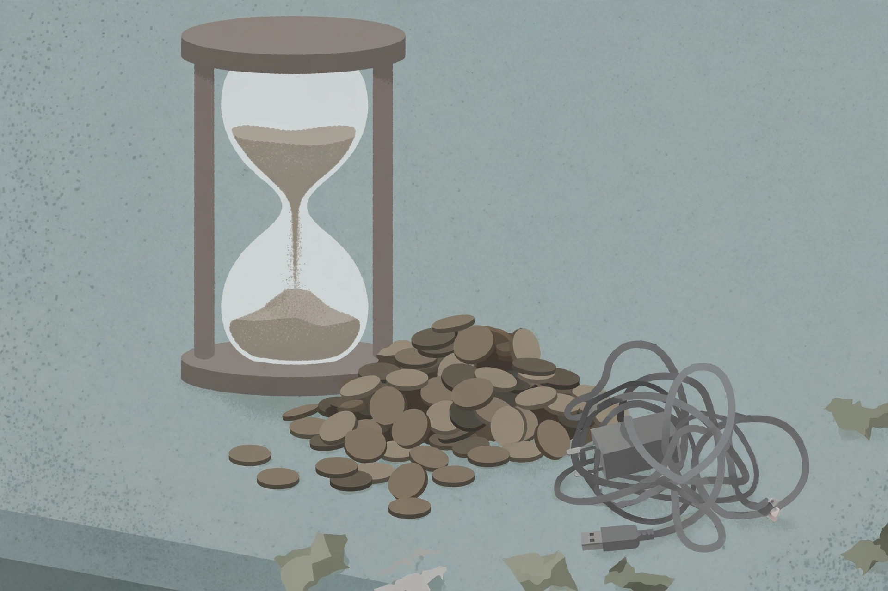

Hustle ideas
Getting Your First Freelance Client After Hours (Without a Portfolio or a Following)
A two-week evenings-only plan: one specific offer, honest proof without clients, five first-client routes, and a follow-up system.
Evening and weekend earners that leave your day job alone
Realistic guides for full-time workers: hustles that fit evenings and weekends, the ground rules that keep your day job safe, and the sustainability habits that keep it working for more than a month. No hype, no income promises — just practical fit.
A side hustle that costs you your job, your health, or your weekends isn't a hustle — it's a second job with worse benefits. These guides help you choose evening and weekend work that fits the hours you actually have, respects your employer, and stays sustainable. Read the ground rules first, then pick the lane that matches your skills and schedule.
Hustle ideas
A two-week evenings-only plan: one specific offer, honest proof without clients, five first-client routes, and a follow-up system.
Hustle ideas
The five clauses to find before your first side dollar: exclusivity, conflicts, confidentiality, IP, and non-solicitation — plus a 10-question self-audit.
Hustle ideas
Platform models compared, Wyzant's 25% cut worked into real dollars, the unpaid hours that change your wage, and an evening-sized setup sequence.
Start here
Time budgeting, employer policy basics, and tax awareness — the five rules that keep extra income from costing you your job.
Hustle ideas
Lawn care, handyman basics, event help, and pet care — physical weekend work with clear schedules and low startup cost.
Hustle ideas
Freelance writing, design, bookkeeping, and virtual assistance from home after hours — plus how to land your first clients.
Hustle ideas
Source on weekends, list in the evenings: a disciplined framework for flipping that keeps the budget small and the math honest.
Sustainability
Pricing your evening hours honestly, spotting early burnout signs, and giving yourself permission to pause or quit.
Hustle ideas
A walk-away rate built for 5-10 evening hours a week, with a worked example and an hourly-vs-project decision tree.

Hustle ideas
The eight-hour test: what surveys, MLM and trend-chasing really pay, plus a six-question screening checklist.
Hustle ideas
A 20-minute weekly record routine for Canadian side earners, plus a head-to-head of tracking methods.
Money math
The full fee stack on one worked tee, Printify Premium's real break-even at about 17 orders a month, and the sample and trademark checks to run first.
Digital products
Etsy vs Gumroad fees compared, the Canva licence link-vs-file decision, and why a $3 template loses a quarter of its price to fees.
Local services
Rover Canada's tiered fees reconciled, evening scheduling math for two walks, and what the Rover Guarantee actually is — and is not.
Fuel, wear at CRA benchmark rates, unpaid time and tax — a worked evening both ways, and the six rules that keep delivery shifts profitable.
Booth fees, jury photos, the 10x rule of thumb, and a four-part pricing method for evening makers selling at weekend fairs.